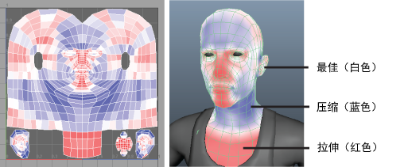

使用扭曲着色器可以轻松确定拉伸或压缩的 UV。通过颜色反馈可以可视化扭曲错误：红色面指示拉伸，蓝色面指示压缩，而白色面指示最佳 UV。
识别 UV 扭曲
- 选择一个 UV 网格。
- （可选）在“UV 编辑器”(UV Editor)中，选择“视图 > UV 扭曲”(View > UV Distortion) >
 。在显示的“UV 扭曲选项”(UV Distortion Options)窗口中，选择“求值”(Evaluation)模式。默认情况下，“UV 扭曲”(UV Distortion)会按“每个 UV 壳”(Per UV shell)进行求值，使您能够查看每个 UV 壳上的扭曲错误。请参见 UV 编辑器的图像(Image)菜单。
。在显示的“UV 扭曲选项”(UV Distortion Options)窗口中，选择“求值”(Evaluation)模式。默认情况下，“UV 扭曲”(UV Distortion)会按“每个 UV 壳”(Per UV shell)进行求值，使您能够查看每个 UV 壳上的扭曲错误。请参见 UV 编辑器的图像(Image)菜单。
- 在“UV 编辑器”(UV Editor)
“视图”(View)选项栏中，单击扭曲着色器图标 。
扭曲着色器将应用于 UV 网格，并显示在 UV 编辑器中。注： 如果扭曲着色器未显示在网格中，请确保在“渲染器”(Renderer)面板菜单中选择了“Viewport 2.0”。
扭曲区域将相对于 UV 空间中的纹理区域进行着色。
注： 扭曲着色器并不影响网格的原始材质、着色器和纹理指定。 - 执行以下操作之一以禁用扭曲着色器：
- 关闭 UV 编辑器。
- 单击扭曲着色器图标。
该网格的原始材质、着色器和纹理指定将重新显示在场景和 UV 编辑器中。